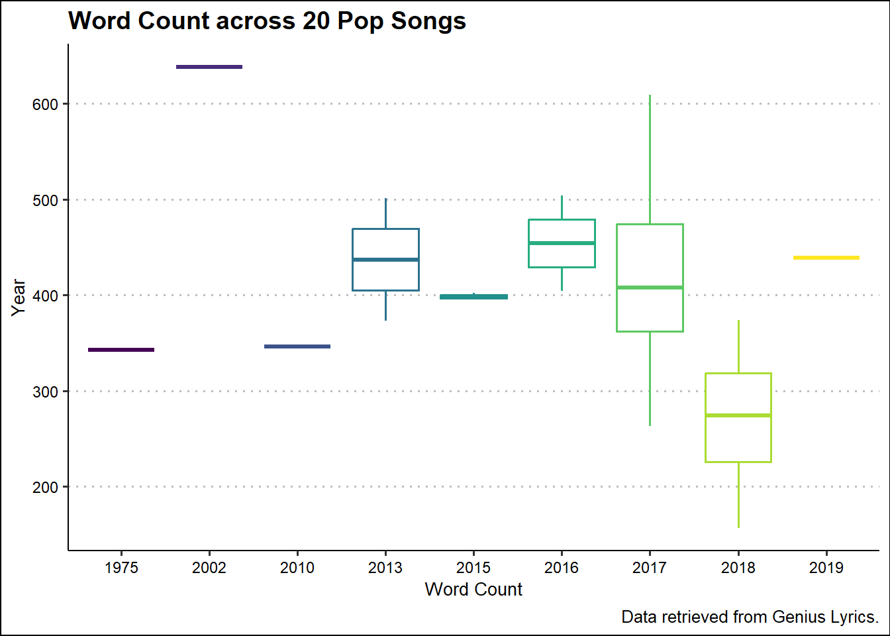
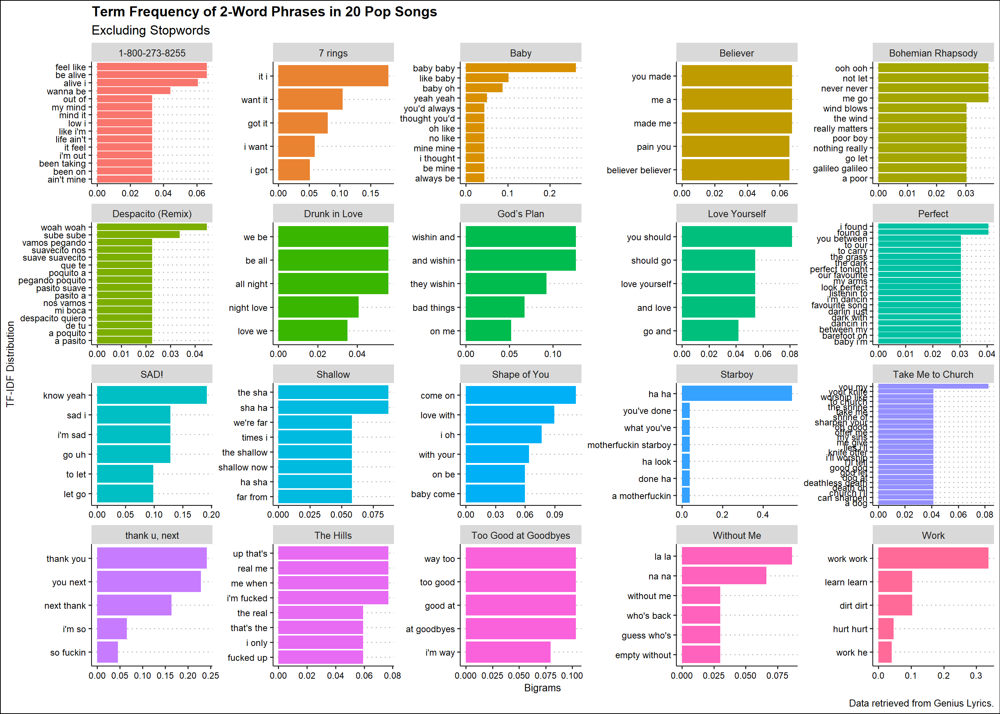
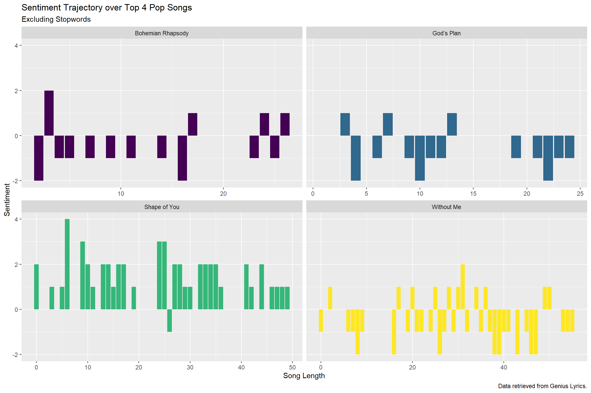

Collecting pop songs
Song 1: "Despacito (Remix)" by Luis Fonsi
Song 2: "Shape of You" by Ed Sheeran
Song 3: "Without Me" by Eminem
Song 4: "Bohemian Rhapsody" by Queen
Song 5: "The Hills" by The Weeknd
Song 6: "God’s Plan" by Drake
Song 7: "Starboy" by The Weeknd
Song 8: "thank u, next" by Ariana Grande
Song 9: "Drunk in Love" by Beyoncé
Song 10: "Shallow" by Lady Gaga
Song 11: "7 rings" by Ariana Grande
Song 12: "1-800-273-8255" by Logic
Song 13: "Work" by Rihanna
Song 14: "SAD!" by XXXTENTACION
Song 15: "Believer" by Imagine Dragons
Song 16: "Baby" by Justin Bieber
Song 17: "Take Me to Church" by Hozier
Song 18: "Love Yourself" by Justin Bieber
Song 19: "Too Good at Goodbyes" by Sam Smith
Song 20: "Perfect" by Ed Sheeran
Done. Found 20 songs.Mini Project 1: Lyrics Analysis
Pop Songs: A Glance into Mainstream Culture
Throughout history, music has been an essential part of human culture. Each generation of people have had their own sets of melodies and tunes that are invaluable for analyzing what the current values of a society are. A simple way to analyze these values is to take a look at the most popular styles of music at the time, and there’s no better genre to do it with than pop.
Pop is known for appealing to the broadest audience, with the name of the genre likely being short for ‘popular’. It came into the world sometime around the 1950s initially as rock music aimed at a more adolescent demographic, but it later transformed into the more fun, catchy, and marketable form we see today.
Through using the lyricsr package developed by Brian Walsh, we can easily do text analyses for some of the most popular songs in the most popular genre all stored within the website Genius.
Our 20 Songs
Obviously it would take a lot of computational effort to parse through the entirety of the pop genre, so this analysis will focus on a small portion of that amount. Using the search_genre() function, that allows us to search for any genre we want, we are able collect the first 20 most popular songs from the Genius genre tag page for ‘pop’.
Voila!
Word Count?
Looking at these 20 songs, we can hypothesize there might be a correlation between word count and popularity. After all, if pop songs tend to be the most uniform genre that appeals to everyone, shouldn’t every song sound roughly similar?
But after running the code…

It doesn’t look like there’s much commonality between word count and the pop songs, or even a trend across years. Taking a closer look at the strange song at 2002 with 638 words, it appears to be ‘Without Me’ by Eminem.
Well, Eminem is a rapper, so maybe it’s because rap tends to have more words overall compared to most other types of music? But ‘God’s Plan’ by Drake as ‘1-800-273-8255’ by Logic also fall into the rap category, and have 300 and 482 words respectively. The other song in 2017 with a word count over 600? Why, it’s ‘Shape of You’ by Ed Sheeran, which is decidedly not rap.
On the opposite end of the speechiness scale is Lady Gaga’s ‘Shallow’, which is more of a country ballad at 157 words. So there doesn’t seem to be a definitive happy medium for pop songs within our net of 20 songs.
But what were the most used words?
Pop is a very, VERY repetitive genre. The bulk of its profitability comes from being catchy, and being able to stick like glue onto the walls of your brain becomes easy when half of the song repeats the same few words over and over again.
First, we have to be sure to use the get_stopwords() function from the tidytext package in order to fully count the most popular words. Without it, words like ‘the’ and ‘you’ and ‘and’ would overpopulate the data. So, we focused on the 20 most common words that appear across all 20 of these pop songs, and we found…
![This is a horizontal bar chart of 20 common words in the top 20 pop songs of Genius Lyrics excluding stopwords. On the X axis is the count of appearances of words across all 20 songs, ranging from 0 to 172. On the Y axis, there are 20 different words. From most to least common, the words are ha, baby, yeah, love, work, la, time, wanna, na, ah, good, wishin, dirt, learn, mine, feel, pain, ooh, life, and body. Most words on this list have under 50 appearances across all the songs, but the words work, love, yeah, baby, and ha are all at least over 80 occurrences. The data was retrieved from Genius Lyrics.](mini_proj_one_kunsang_files/figure-html/unnamed-chunk-6-1.png)
That is a lot of ‘ha’s. 172 of them, in fact! The second most common is ’baby’ at exactly 100, which makes a lot of sense if pop songs tend to be more focused on romance.
Now how many times does a word repeat after itself?
# A tibble: 20 × 2
title doubled
<chr> <int>
1 Despacito (Remix) 8
2 Shape of You 6
3 Without Me 16
4 Bohemian Rhapsody 9
5 The Hills 2
6 God’s Plan 1
7 Starboy 32
8 thank u, next 2
9 Drunk in Love 3
10 Shallow 2
11 7 rings 0
12 1-800-273-8255 1
13 Work 29
14 SAD! 0
15 Believer 3
16 Baby 27
17 Take Me to Church 1
18 Love Yourself 0
19 Too Good at Goodbyes 4
20 Perfect 3Well, that makes sense. ‘Starboy’ is the primary source for the staggering 172 ‘ha’s, while ’Work’ and ‘Baby’ repeat the title of the song over and over.
Bigrams and Term Frequency Distribution
Let’s now take a look at bigrams, which are pairs of 2 words next to each other. For example: in ‘the quick brown fox’, we would have 3 different bigrams of ‘the quick’, ‘quick brown’, and ‘brown fox’. The amount of bigrams increases with the length of a given text. In order to look deeper into repetition within pop songs, bigrams are a useful tool.
But something else we can do with bigrams is find the term frequency-inverse document frequency (tf-idf) of phrases (bigrams) for a given song. The ‘tf-idf’ is a complicated way of saying we want to calculate the most important bigrams for each songs.
Looking at our tf-idf distibution across each song, we find…

From looking at the figure, ‘Starboy’ confirms our previous observation that ‘ha ha’ is repeated very often wthin the song. ‘Without Me’ appears to have the least amount of essential repeated phrases, with ‘Shallow’ by Lady Gaga coming in second with low tf-idf scores. We can see that these songs tend to have at least one relatively common repeating bigram that is ‘very important’ to the song, and that serves to confirm that pop songs rely on having a certain number of catchy phrases for people to remember them by.
Sentiment Trajectory
Finally, let’s look at a sentiment trajectory of 4 songs within the pop songs list. For this case I chose ‘Shape of You’, ‘Without Me’, ‘Bohemian Rhapsody’, and ‘God’s Plan’, which are the first 4 songs in the list of pop songs, excluding the Despacito Remix. The choice to exclude Despacito was because the sentiment dictionary (bing sentiments) is intended for English words, and a good portion of Despacito is in Spanish. It would not serve as a very useful comparison to the other 3 songs if it was included.
That being said, by categorizing each word of the song into positive and negative groups depending on how they are labeled in the sentiment dictionary, we find that…

Bohemian Rhapsody and God’s Plan are mostly negative songs, Shape of You is a primarily happy song, and Without Me has more negative moments but experiences a lot of fluctuation over the course of the song. What does that tell us? There doesn’t seem to be much commonality among the feelings each song is trying to portray to the listener. Maybe there’s a lesson to be learned in that?
Closing Thoughts: What does it all mean?
After all this text analysis, we have come to a striking conclusion: pop is a very un-uniform genre. Every pop song has some different aspect to it that can easily appeal to anyone without specifying any group in particular, which is what makes it such a popular genre! The only factor that seems to be a common trait among pop songs is how much they love repeating phrases again and again.